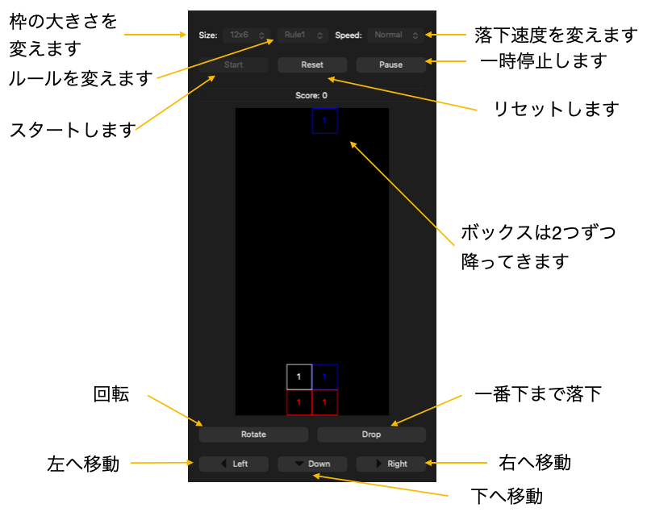

ブロック崩しゲーム 使い方ガイド
このゲームは、Qtを使用して開発されたブロック崩しゲームです。
こちらから利用できます。
ブロックには赤、青、緑、白の4色があり、各ブロックには数字が書かれています。上空から落ちてくるブロックを操作して、ブロックを積み上げていきます。
ブロックはルールに従って消すことができ、消したブロックの数字はスコアとして加算されます。ルールはゲーム開始前に選択することができます。
ルール１：同じ色のブロックが4つ以上繋がる。
ルール２：同じ色のブロックが4つ以上つながりかつ、繋がったブロックの数字の和が10以上になる。（ボックス内の数字は１か２の数字がランダムに選択されます。）
ルール３：同じ色のブロックが4つ以上つながりかつ、繋がったブロックの数字の和が20以上になる。（ボックス内の数字は１から５までの数字がランダムに選択されます。）
ルール４：同じ色のブロックが4つ以上つながりかつ、繋がったブロックの数字の和が4の倍数になる。（ボックス内の数字は１から３までの数字がランダムに選択されます。）
ルール５：同じ色のブロックが4つ以上つながりかつ、繋がったブロックの数字の和が７の倍数になる。（ボックス内の数字は１から５までの数字がランダムに選択されます。）
